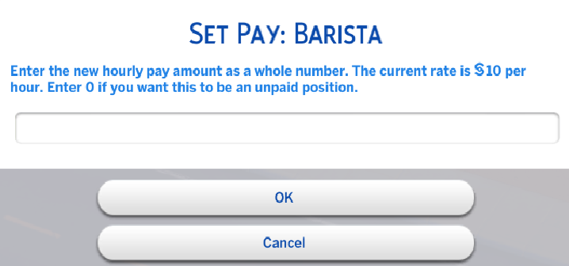
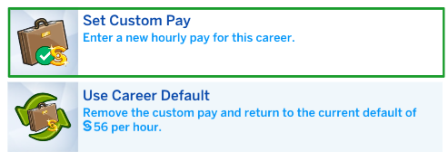
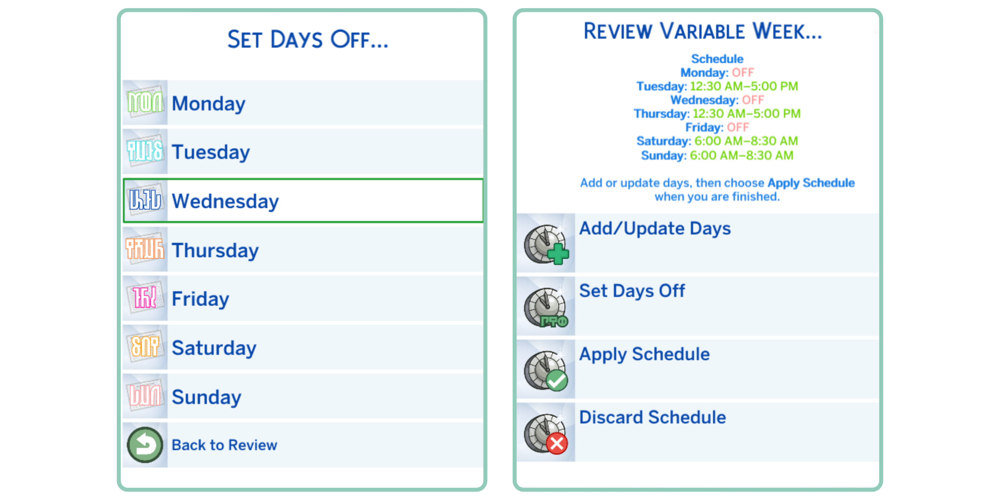

THE SIMS 4 · MIDNITETECH MODS
AnyShift
Schedules, Pay & User Guide
 About AnyShift
About AnyShift
AnyShift is a fully Base Game compatible mod that lets you set your Sim’s work and school schedules however you like.
It works with any career, including custom careers by other creators.
It also includes a new setting called AnyPay: Manage Pay, allowing you to change your Sims' salaries instantly.
It includes preset shifts and several create‑your‑own options, including setting different hours for different days and even multiday schedules that can run across several days.
To get started, you just need the mod itself and the latest version of my
📁modlibrary
Then, head to
📱Phone → Business → AnyShift
💻 Computer → Career → AnyShift
📅 AnyShift Calendar
📫 Mailbox → AnyShift
The AnyShift Calendar can be found in Build/Buy (search AnyShift or look under Paintings & Posters).

Your custom schedules will be saved to C:\Users\YourName\Documents\Electronic Arts\The Sims 4\midnitetech_settings.json
AnyPay
💻 Computer → Career → AnyShift
📅 AnyShift Calendar
📫 Mailbox → AnyShift
AnyPay allows you to change your Sims' salaries instantly.

When your Sim is promoted, their base pay will remain as the custom amount you set, with their raise added, and you can Use Career Default at any time to return to the normal pay rate.
AnyPay works with all careers, custom or EA, and you can set different pay rates if your Sim has multiple careers, too.

Preset & Saved Templates
💻 Computer → Career → AnyShift
📅 AnyShift Calendar
📫 Mailbox → AnyShift
This is where you’ll find preset schedules in four categories: Morning, Afternoon, Evening, and Night. Pick the shift you want, and it’ll apply straight to your Sim’s career. If your Sim has multiple careers or is also in School or University, you’ll see a separate interaction for each one so you always know exactly what you’re editing.

You’ll also see Save Current Schedule as Template, which lets you save your Sim’s current shift pattern as a reusable template. You can name it and give it an icon. Once saved, it becomes available to every Sim in your save through My Custom Saved Schedules. You can delete any templates you no longer need from here too.

Create Custom Schedule
📱Phone → Business → AnyShift
💻 Computer → Career → AnyShift
📅 AnyShift Calendar
📫 Mailbox → AnyShift
Ready to set up your own schedule? Choose AnyShift, then pick each day you want your Sim to work (up to 7 if they’re a true workaholic). After that, set your Start and End time.
For example, choosing Monday, Tuesday, and Friday with a 7:30 AM start and 2:30 PM end will give your Sim a schedule of Monday, Tuesday, and Friday—7:30 AM to 2:30 PM.

 Advanced Scheduling
Advanced Scheduling
💻 Computer → Career → AnyShift
📅 AnyShift Calendar
📫 Mailbox → AnyShift
Advanced Scheduling lets you set Extended or Variable schedules for your Sims. This option applies to standard careers only; it doesn’t affect University or School.
Extended Schedules
Choose one Start day, Start time, and the length of the shift. For example, starting on Monday at 9 AM with a 72-hour duration means your Sim will head out Monday morning and return home three days later.
Variable Schedules
Set different hours for different workdays by grouping the days that share the same shift. For example, select Monday & Tuesday, set 7:00 AM–9:30 AM, and confirm with ✅. You’ll then be able to add more workdays, plus choose which days your Sim has off. The schedule updates dynamically as you go, and you can Apply it once you’re done.
This allows your Sim to follow shift patterns like:

 View Current Schedule
View Current Schedule
📱Phone → Business → AnyShift
💻 Computer → Career → AnyShift
📅 AnyShift Calendar
📫 Mailbox → AnyShift
Check the schedule for each career your Sim has. The career panel updates dynamically to show your current shift pattern, but you can use this option, or the in‑game Calendar, to view each day’s schedule in full.

Manage Multiple Careers
💻 Computer → Career → AnyShift
📅 AnyShift Calendar
📫 Mailbox → AnyShift
Add Another Career
You can add an additional career here without affecting your Sim’s existing job. Sims can hold multiple careers at the same time. If the hours overlap, use Create Custom Schedule to adjust each job’s work times so they fit together. Any degree entitlements will still apply, so you will get a career jump if your Sim is eligible.
Quit Career
You can also quit any of your Sim’s active careers from this menu. Choose which job you want to remove without touching the others.
EA/Other Mod Compatibility
This system doesn’t override EA’s built‑in career logic. If you use Find a Job through the standard EA interface, the usual rules still apply, and your Sim may lose any careers that are incompatible with the new one.
Settings
*📱Phone → Business → AnyShift
💻 Computer → Career → AnyShift
📅 AnyShift Calendar
📫 Mailbox → AnyShift
Keep Schedule When Promoted
Your Sim will keep their current custom schedule after a promotion.
Reset to Default When Promoted
When your Sim is promoted, their schedule will revert to the default instead of being retained.
*Reset Hours to Default
Resets your Sim’s current schedule back to the original default hours. This does not affect the promotion settings above.
FAQ
Nothing happens when I choose a schedule.
If you don't get a success notification, or your Sims' schedule does not update, you may have a conflicting mod installed. Remove anything that affects schedules, and try again. If you're unsure, move ALL your mods to a different folder temporarily, and test with only AnyShift and my modlibrary installed.
I can't find the AnyShift options menu!
You can use the Calendar object by searching Build/Buy for AnyShift, or by heading to a Computer (under Career), Mailbox, or Phone (Business). If the options aren't showing up, you likely have an incorrectly installed or outdated version of my 📁modlibrary
The option to Take PTO (Paid Time Off) has disappeared.
Sims can only take PTO if their next shift begins within 24 hours. If you’ve edited the schedule, the next shift is likely too far away for PTO to appear. This is normal EA behavior, not a mod issue.
Can I edit my School or Discover University hours?
Yes! If you're editing your university class hours, though, you must reschedule them so that you complete the required number before the end of the term, and you can only use Custom Schedules, not Advanced. You'll be notified if you select an incompatible day.
I've chosen a new class schedule for my Sim in University, but they aren't going to class.
If you edit your schedule and pick the current or next day, the Sim will attend the next scheduled day. Don't worry, you won't miss classes, as you cannot choose incompatible days.
How do I choose my Days Off in Create Custom Schedule?
Only select the Shift Days that you want your Sim to attend work.
ℹ️ Question not answered here? Send me a message and I'll get back to you ASAP. Please be sure to include your midnitetech_settings.json, and your midnitetech_log.html.